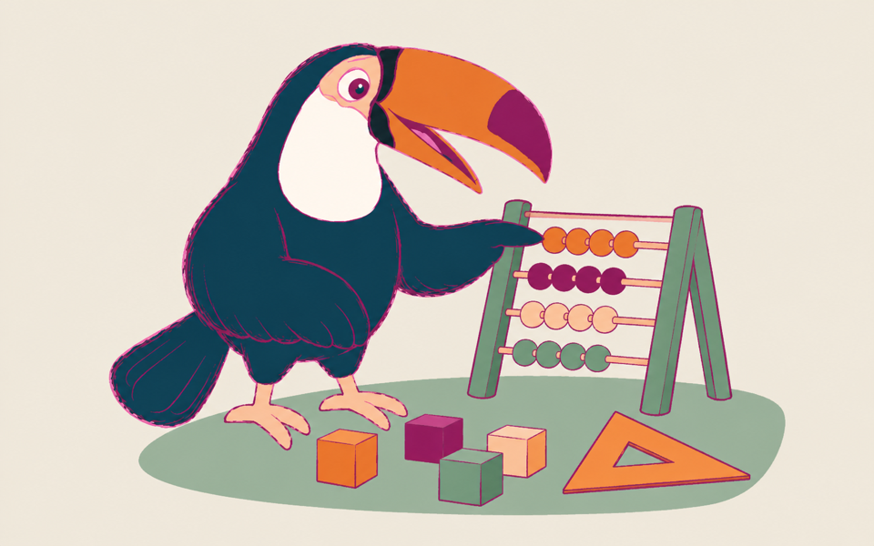
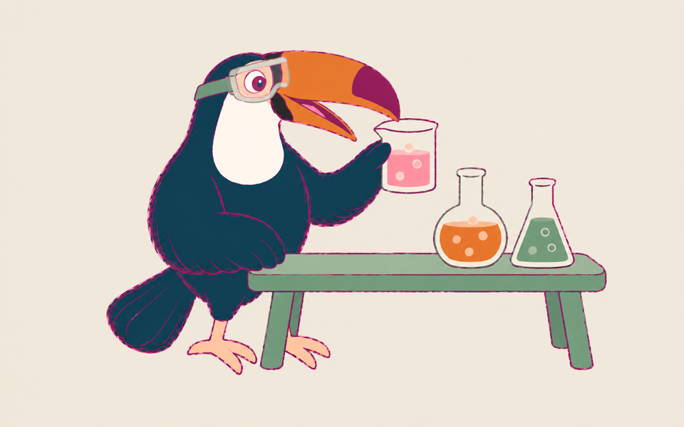
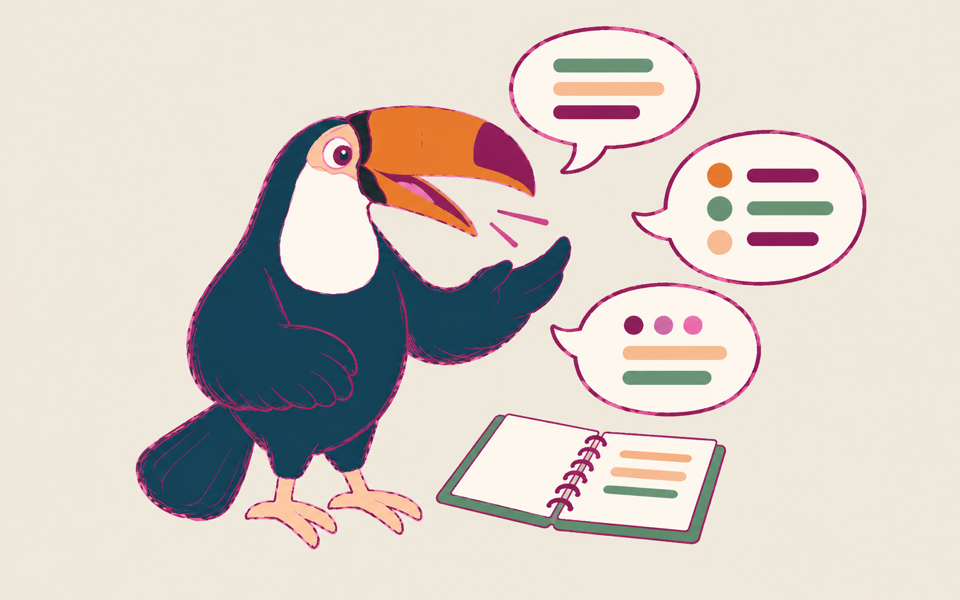
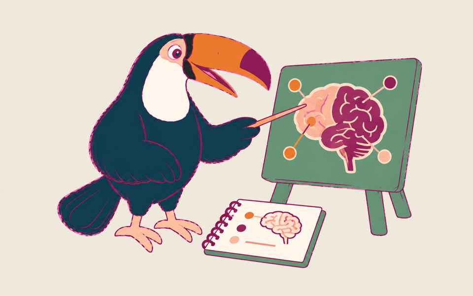
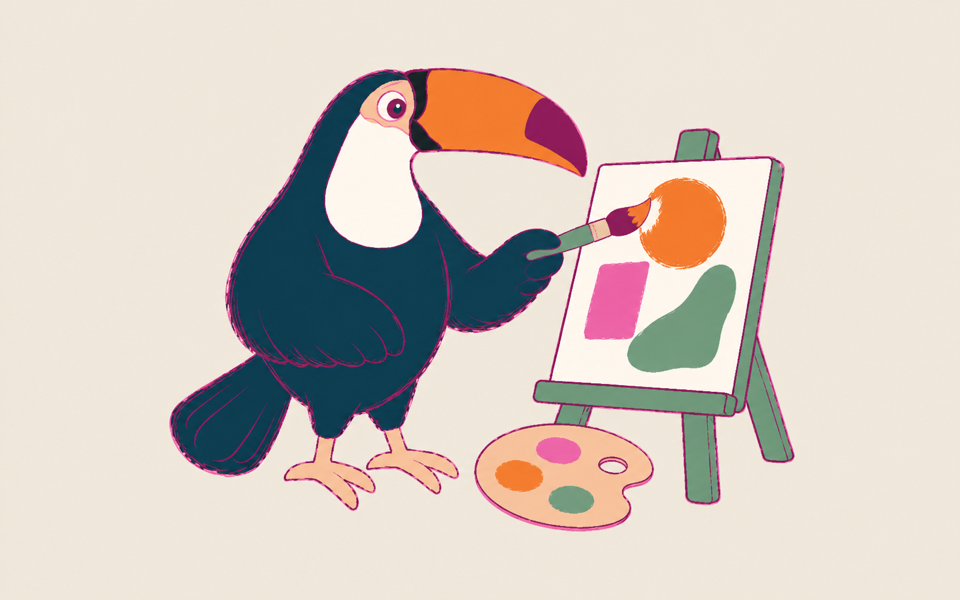
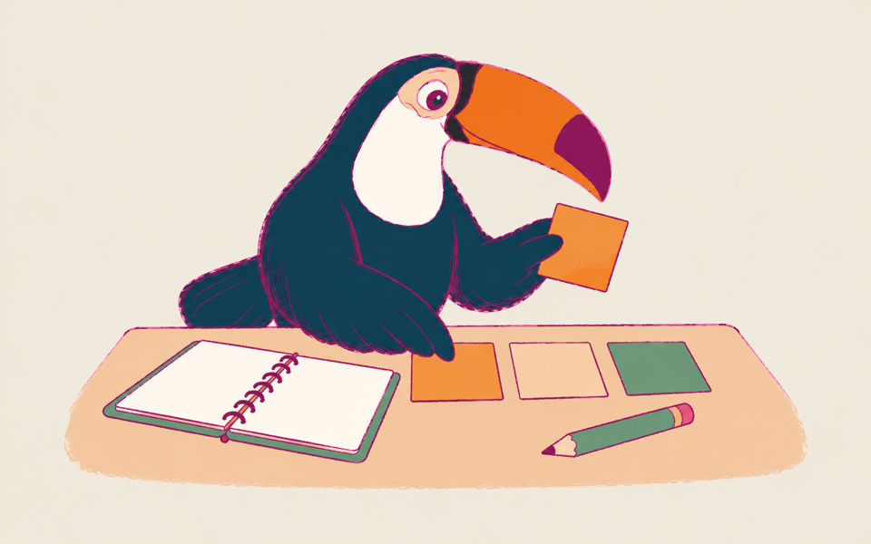
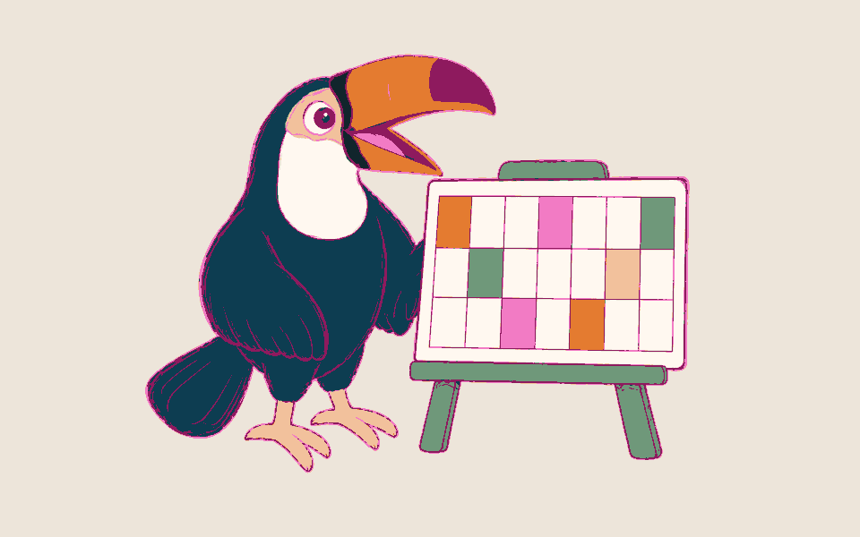

Start with the skill you want to build.
English, maths, science, languages, Psychology, Art and DT, and SEN support, with the level, goal and tutor agreed before lessons begin.
Your first session and diagnostic report are free.

English
Build reading, writing, speaking and listening around the learner’s interests and goals.
Primary
Spelling, sentences and reading, through stories, games and practical writing.
KS3
Build reading comprehension and turn ideas into clear, structured writing.
GCSE Language & Literature
Choose evidence, shape an argument and practise answers with past papers.
Adults & qualifications
Workplace English, Functional Skills, IELTS, TOEFL and Cambridge English, with focused practice and feedback.
Joshua and Aaron teach English; Connor also supports primary learners.
Book a free first session Explore English for children →Explore adult qualifications →

Maths
Find the gap, make the method clear and build confidence through practice.
Primary
Number skills, time, money and measures, with clear examples and practice.
KS3
Rebuild missing concepts and practise methods in manageable steps.
GCSE Foundation & Higher
Work through the curriculum, then apply methods to exam questions.
Everyday numeracy
Practise useful calculations for work and daily life.
Aaron teaches maths up to GCSE; Connor supports primary learners.
Book a free first session Explore school and exam support →Explore adult learning →

Science
GCSE combined and separate sciences with Aaron, at the learner’s pace.
Biology
Make sense of course topics, then practise explaining them clearly.
Chemistry
Break tricky topics into steps, with explanations and question practice.
Physics
Work through ideas with clear examples, then apply them to questions.
Exam technique
Use past papers and mark schemes to build precise, relevant answers.
Bring your course details, current topics and any questions you are finding difficult.
Book a free first session Explore exam support →Explore the team →

Languages
Languages for children and adults: school, work, travel, family or relocation.
- Spanish
- Vocabulary, comprehension and communication for all ages, up to A-level.
- French
- French up to GCSE, plus conversation for travel and everyday life.
- Italian
- Italian for your level and goal. Qualification scope confirmed at enquiry.
- German
- From first phrases to confident conversation, for school, exams, work or travel.
- Vietnamese
- Everyday Vietnamese for family, travel and heritage learners, from first words up.
- Korean
- Hangul, everyday conversation and school or exam support, at any level.
- Mandarin Chinese
- Pinyin, characters and speaking practice, for school, work or travel.
- Arabic
- Arabic from beginner to advanced, plus English for Arabic speakers.
We match the tutor to your level and goal when you enquire.
Book a free first session Explore the language tutors →Explore adult language learning →

Psychology
A-level and IB Psychology with Joshua, our founder and a psychology graduate.
IB Papers 1, 2 & 3
Connect studies to the question, plan answers and practise exam technique.
IB Internal Assessment (IA)
Plan your investigation and review your draft against the course requirements.
IB Extended Essay
Shape a focused question, organise your argument and refine your writing.
A-level Psychology
Build topic knowledge, evaluate studies and practise short and extended answers.
Bring your course requirements, current work and exam or coursework dates.
Book a free first session Explore Joshua’s profile →Explore our lessons →

Art & DT
Make, experiment and develop your ideas with Aaron, our art and design lead.
GCSE Art & Design and DT
Build your portfolio and practical skills, and plan coursework that meets the brief.
A-level Art and DT
Develop your own ideas, practical projects and written work around your course.
IB Visual Arts and Design Technology
Experiment, refine design projects and explain the ideas behind your work.
Creative projects at any age
Not exam-led: make, experiment and explore ideas through art and design.
Tell us what you enjoy making and bring your course requirements or current project.
Book a free first session Explore Aaron’s profile →Explore creative learning →

SEND support
Start with what the learner enjoys, with Joshua, our founder, psychology graduate and SEN specialist.

Enjoy the learning
Start with their interests, so the activity matters in its own right.

The next step, together
Work just beyond what they can do alone, then gradually step back.

A setting that works
Adapt the environment, pace and explanations around the learner.

Choice and real projects
Let them choose, make and explore through hands-on, real-world projects.
Joshua is Team Teach qualified in positive behaviour support. Weekly reports keep families informed; we work with schools too.
Book a free first session Explore Joshua’s profile →Explore weekly reports →